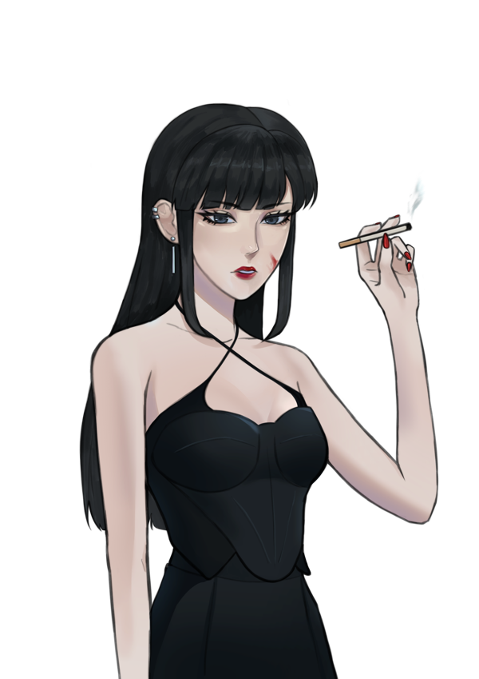

chapter 2
writing on the wall

The bass pounding through the Throne tightens the iron vice on her skull, digging its claws into the
bone and whittling away the remnants of coherent thoughts.
She locates the Mods lounging on the white leather chaises, huddled amongst themselves.
They whisper conspiratorially – or perhaps she only imagines the silence that falls as her heels click in approach.
“Ezri.” The Mod splits his mouth into a grin. “We were wondering if you would be returning after the…fiasco.” MK’s lip curls.
Ugh. “Of course.” Her smile is equal parts teeth and tongue. “I wouldn’t dream of letting a minor inconvenience ruin our celebration. After all, it’s barely past three.”
She gestures for another round of drinks to be served, the glass walls darkening at her command.
“A toast.” Ezri takes a flute from the platter and raises it. The transparent room suspended in the centre of The Void transforms itself into a black box. “To the eve of our 7th anniversary!”
“To the eve!” the Mods echo, downing the glasses one by one.
Her lips kiss the rim, impressing a garnet stain. A languid smile takes its place as Ezri drops into a seat and easy conversation, stretching her arm over the top of the lounge to tip the untouched liquid into a potted plant. Ezri sets her alibi on a nearby table, nodding along to the words of her companions.
“Can you believe it’s been seven years?” AM exclaims, golden bangles jingling in excitement.
The fuschia sequins on her dress refract the strobing lights – so sharply that Ezri tilts her head, vision just grazing the milky curve of her cheek. Blissfully oblivious, AM flashes an equally blinding beam.
Ezri chuckles. “We haven’t been here all seven years.”
She locates the Mods lounging on the white leather chaises, huddled amongst themselves.
They whisper conspiratorially – or perhaps she only imagines the silence that falls as her heels click in approach.
“Ezri.” The Mod splits his mouth into a grin. “We were wondering if you would be returning after the…fiasco.” MK’s lip curls.
Ugh. “Of course.” Her smile is equal parts teeth and tongue. “I wouldn’t dream of letting a minor inconvenience ruin our celebration. After all, it’s barely past three.”
She gestures for another round of drinks to be served, the glass walls darkening at her command.
“A toast.” Ezri takes a flute from the platter and raises it. The transparent room suspended in the centre of The Void transforms itself into a black box. “To the eve of our 7th anniversary!”
“To the eve!” the Mods echo, downing the glasses one by one.
Her lips kiss the rim, impressing a garnet stain. A languid smile takes its place as Ezri drops into a seat and easy conversation, stretching her arm over the top of the lounge to tip the untouched liquid into a potted plant. Ezri sets her alibi on a nearby table, nodding along to the words of her companions.
“Can you believe it’s been seven years?” AM exclaims, golden bangles jingling in excitement.
The fuschia sequins on her dress refract the strobing lights – so sharply that Ezri tilts her head, vision just grazing the milky curve of her cheek. Blissfully oblivious, AM flashes an equally blinding beam.
Ezri chuckles. “We haven’t been here all seven years.”